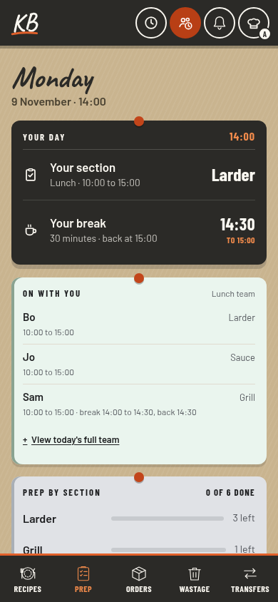
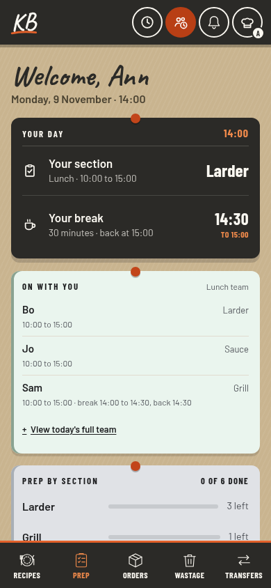
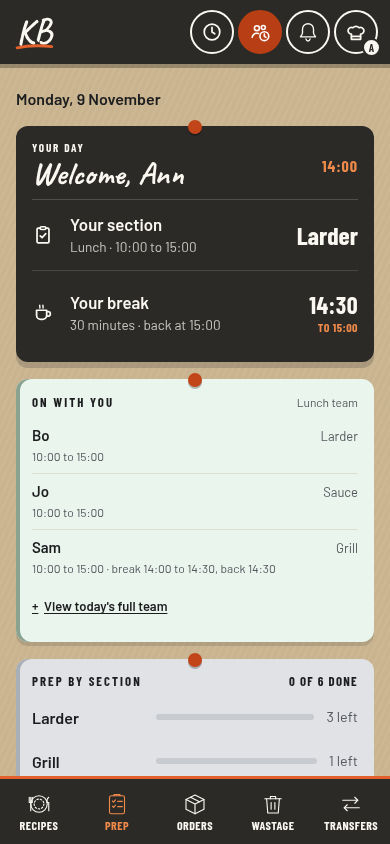
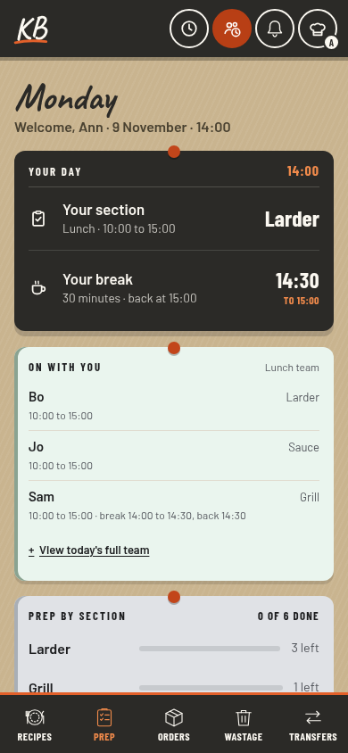

Three ways to recognise the person signing in, while keeping their section, break and team first. These are proposed layouts captured in the actual app with fictional people. Nothing here changes the live book.
Current app
The day leads
The weekday is the heading. Staff already see their own section, break and scheduled coworkers.

The missing piece is an explicit welcome using the staff name. Identity is already available in the chef hat and menu.
A · Named welcome
Welcome, Ann
Put the name in the existing handwritten heading. Keep the full day and date just below.

Warmest, clearest welcome. Keeps the current board and card order. A long name needs more heading space.
B · Welcome on your board
Your work starts here
Use a compact date above the cards. Put the greeting on the charcoal board with the person's section and break.

Connects identity to the shift. Brings useful cards higher. Your day becomes a smaller label, and the board has to hold a longer name.
C · Quiet recognition
Keep the day in front
Retain the weekday heading. Put a small named welcome in the date line below, leaving the personal board as it is.

Most restrained. Very little relearning. The welcome is easier to miss, and long names make the date line wrap.